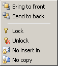

|
This menu it provides a set of control related items. |
 |
| Bring to front | place all selected controls to the front of others. Note that this is an editor related only, and does not affect resulting code. |
| Send to back | place all selected controls behind of others. Note that this is an editor related only, and does not affect resulting code. Note: All settings below remain active within a working session only which does not save with the form data. |
| Note: All settings below remain active within a working session only which does not save with the form data. | |
| Lock | locks all selected controls, i.e. disallows control moving and/or resizing. |
| Unlock | unlocks a locked control. |
| No insert in | applicable to container controls, presents insertion of controls into them. |
| No copy | prevents copying of marked controls. |